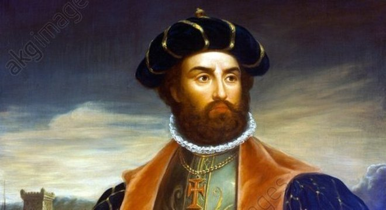
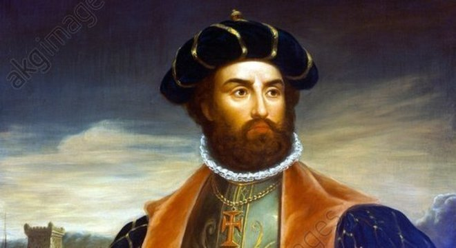
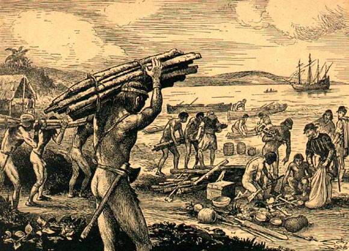
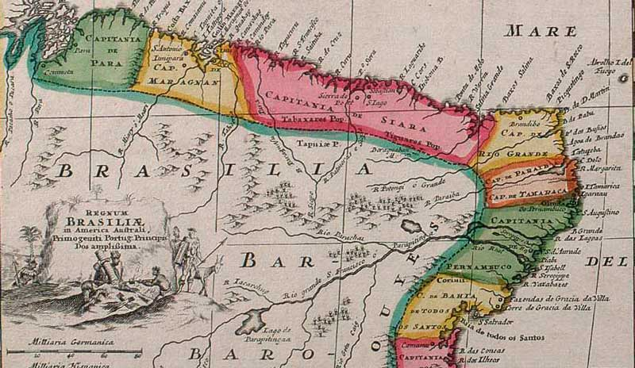
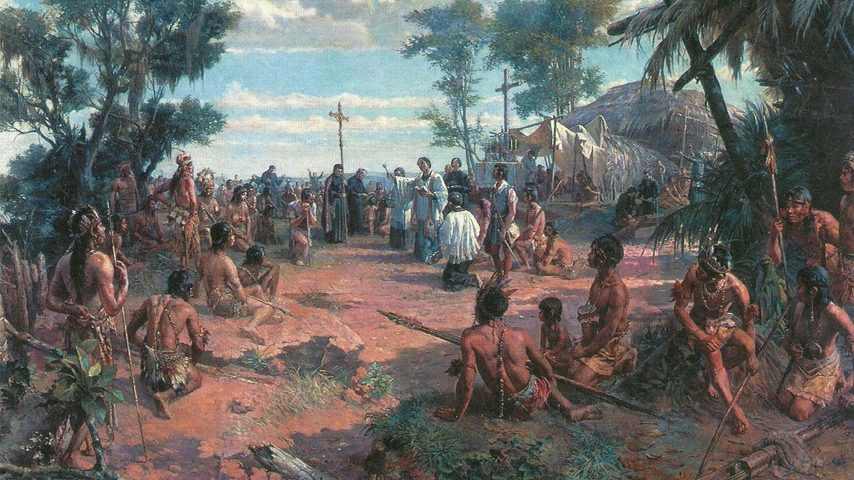
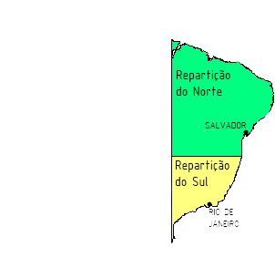
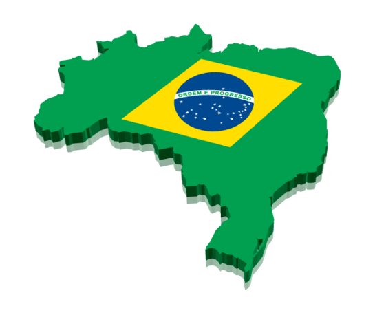
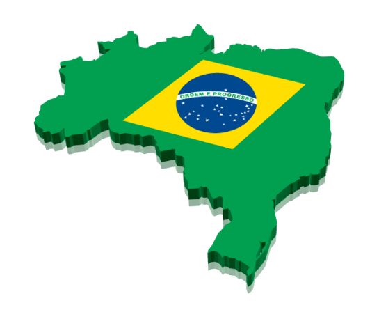

Bem Vindo ao Brasil Alway
Aqui você vai conhecer um Pouco da História do nosso Querido Brasil. que antes de se tornar um Pais Indepedente era apenas uma Colonia de Portugal
Coletamos o maximo de informação possivel do Pais, para que você tenha uma otima experiencia na nossa pagina.
1500 - o "Descobrimento"
22 de abril de 1500 - neste dia pedro alvares cabral (navegador português) junto com sua tripulação chegava naquilo que um dia ia se tornar o Brasil. mas eles não estavam em uma terra vazia, essa terra já tinha alguém habitando nela e esse alguém era os indios, como os indios chegaram nesse territorio ai já é pauta pra um outro assunto ... mas que o brasil já tinha um povo habitando e morando ai tinha, com tudo parecia que para os dois povos aquele encontro foi uma surpresa.
 

1500 - 1822 - Brasil Colonia
com a surpresa dos dois povos logo iriam fazer seus acordos particulares portugal fez então aliança com alguns indios e começou a investir naquela terra. começando com a exploração do pau-brasil (que era uma madeira que produzia uma tinta usada para produzir tecidos e moveis) em troca da madeira os portuguêses davam pequenos objetos que para eles eram uteis como por exemplo machados, facas, espelhos canivetes e entre outras coisas ...
os indios faziam a extração da madeira e transportavam para as feitorias que logo depois iria ser levada para a Europa, com o tempo o pau-brasil deixou de ser importante para os portugueses com tudo precisava de um nova forma de poder tomar toda aquela terra, porque outras nações como por exemplo a frança já estavam de olho aqui.
1534 - 1546 - Capitanias Hereditarias
portugal decide então dividir o territorio em 15 capitanias hereditarias onde cada capitania teria um capitão donatario que recebia a terra a partir da carta da doação, cujo deveres e direitos era: criar vilas, distribuir terras a quem deseja-se cultivá-las, excercer plena autoridade no campo judicial e administrativo.
podendo inclusive autorizar a pena de morte, escravizar os indios, e obrigar-los a trabalhar na lavoura, o capitão era obrigado a entregar 10% de todo o lucro sobre os produtos da terra ao rei de portugal e um 1 quinto dos metais preciosos encontrados nas terras. e a atividade economica dessa vez foi o açúcar. contudo dessas 15 capitanias somente 2 obtiveram exito - a de são vicente e a de pernambuco ambas conseguiram estabelecer uma aliança solida com os grupos indigenas.
1548 - Governo Geral
com o fracasso das demais capitanias causada pelos donatarios que não conseguiam ter uma relação solida com certos grupos indigenas a coroa portuguesa decide criar uma outra forma de poder organizar a administração e o territorio colonial. apostando suas fichas em tomer de souza como governador-geral da colonia. o papel do governador-geral era aplicar um conjunto de leis propostas pela propria coroa portuguesa.

ele tinha as funções administrativas, judiciais, militares, e tributarias. seus feitos no governo foi fundar a cidade de salvador que foi a primeira capital do brasil, criou varios engenhos de açúcar, e deu inicio a atividade pecuária. e foi no seu tempo de governo que chegaram os jesuitas que que eram padres de uma ordem religiosa, tmb veio os escravos africanos e as mulheres. seu tempo no governo foi de 1549 a 1553.

seu sucessor foi Duarte da Costa - que governou durante o periodo de 1553 a 1558. entre seus feitos teve a fundação da cidade de são paulo no dia 25 de janeiro de 1554
e organizou a luta contra as tribos indigenas que eram contrarias a portugal, e organizou expedições em busca de metais preciosos e recursos minerais
depois de duarte da costa veio Mem de Sá que governou durante o periodo de 1558 a 1572 seus principais feitos foi a expulsão dos franceses do litoral do rio de janeiro, adotou medidas para estimular a produção de açúcar no brasil, fortaleceu o sistema de governo-geral
viabilizou a fundação de missões jesuitas indigenas, e também foi no seu governo que ocorreu a fundação da cidade do rio de janeiro, realizado por Estácio de Sá que era sombrio de mem de sá - no dia 1 de março de 1565.
logo depois que mem de sá saiu seu sucessor deveria ser Dom Luis Fernandes de Vasconcelos mas infelizmente morreu antes de tomar posse porque a frota em que ele se encontrava foi destruida pelos franceses no mar.
a Divisão - 1572 a 1578
de 1572 a 1578, o brasil foi dividido em dois governos: o do norte com a capital de salvador onde estava a cargo de luis de brito, e a do sul com a cidade do rio de janeiro com antonio salema.
1580 - o Dominio Espanhol
em 1580, portugal e todas as suas colonias ficaram sob o dominio da Espanha, esse periodo durou até 1640. periodo esse que é conhecido como União Ibérica. portugal foi muito ameaçado por nações estrangeiras, entre essas nações estavam os ingleses, franceses, e holandeses.

em 1621, ainda sob o dominio da espanha, o brasil foi novamente dividido em dois estados - o estado do maranhão e o estado do brasil. essa divisão durou até 1774, quando foi reunificado por marquês de pombal.
 

mas é claro que o brasil não estava totalmente seguro de sofrer invasões de outras nações que também queriam uma fatia do bolo do brasil.